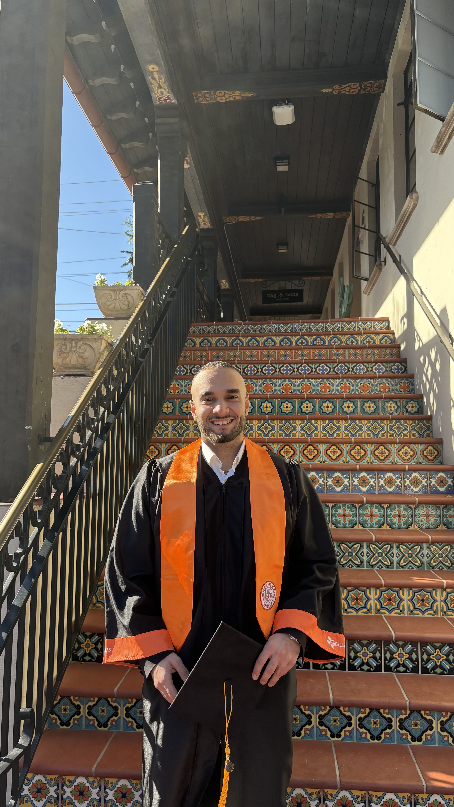

UT Dallas
B.S. in Computer Science. President of the Cybersecurity Community.
Cybersecurity Analyst · Cloud Security
Flagship system · MDFC Triage Sentinel
A high-severity cloud finding enters the system. The evidence is still fragmented.
Sample investigation
Verdict
Unclassified Human approval required before action01 / 05
Photography: Sergei Starostin and Brett Sayles / Pexels
02
About

McKesson · Cloud Security
Cybersecurity Analyst
I secure cloud environments, investigate risk, and build automation that helps security teams move from findings to decisions.
My background spans cloud posture management, product security, endpoint defense, and AI-assisted security workflows.
I started in computer science without knowing whether I would land in application security, cloud, a SOC, or governance.
The answer became cloud security because it sits at the intersection of infrastructure, identity, automation, and detection.
B.S. in Computer Science. President of the Cybersecurity Community.
Progressed from Product Security Engineer Intern to Cloud Security Analyst.
Cybersecurity Analyst focused on cloud security and enterprise risk reduction.
03
Evidence, not adjectives
0+
Cloud misconfigurations remediated through Defender for Cloud.
0%
Improvement in cloud security posture within six months.
0+
Enterprise endpoints monitored and secured.
0%
Reduction in mean time to respond through an AI security agent.
04
Selected work
A LangGraph supervisor routes cloud findings through context, network, and threat-analysis agents before a human approval gate allows action.
An Azure AI Foundry agent that identifies exposed resources and sends actionable reports to resource owners.
An AI-assisted goal tracker for cybersecurity students and graduates, with personalized onboarding, streaks, and mentor chat.
Daily practice
“Ahmet brings a rare combination of intellectual curiosity, humility, reliability, and quiet leadership.”
05 · Contact
Cloud security, cybersecurity, and the ideas shaping both.
If you want to talk security, compare notes, or simply say hello, my inbox is open.
Email me